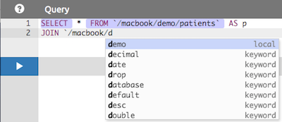

Users Guide
Introduction
This Users Guide can assist with daily usage of SlamData. For information on how to install and configure SlamData see the SlamData Administration Guide
Launching SlamData
Starting SlamData on a local system will automatically open a new browser window or tab with this URL: http://localhost:20223/slamdata/index.html
If SlamData is not installed locally but instead is on a remote system it can be accessed with a similar URL: http://servername:20223/slamdata/index.html where servername is the DNS name or IP address of the server.
Key Concepts
It is useful to understand the following key concepts when using SlamData.
| Feature Name | Image | Description |
|---|---|---|
| Cluster | A cluster represents a database server | |
| Folder | A folder represents a database | |
| File | A file represents a table or collection | |
| Notebook | A notebook contains a user's work |
A Cluster (server) may contain 0, 1 or more Folders (databases).
A Folder (database) may contain 0, 1 or more Files (tables or collections).
Clicking on a Cluster, Folder, File or Notebook will display its contents.
Notebooks
Notebooks capture data workflows in a visual fashion that allows you to query data, transform and visualize it in the form of charts and reports.
Each stage in a Notebook's workflow is called a cell or card. Cells can rely on data from previous cells or exist independent of other cells.
A Notebook can be created in one of two ways:
- By clicking on the Notebook
 icon in the upper right of the SlamData UI.
icon in the upper right of the SlamData UI. - Clicking on a collection and renaming the subsequently displayed Notebook something other than
Untitled Notebook.
Whenever an existing Notebook is changed it is automatically saved and can be referred to in the future. For instance if a Notebook contains an exploration cell followed by a query cell, the query can be changed and executed and the Notebook is then automatically saved. This allows a user to work in a Notebook without fear of losing work or data.
Cell Types
To add a new cell to a Notebook click on the  icon and select one of the following cell types
icon and select one of the following cell types
| Cell Type | Image | Description |
|---|---|---|
| Exploration | Browse data in a table or collection | |
| Query | Leverage SQL² for powerful queries | |
| Search | Simple searching for non-technical users | |
| SlamDown | Create static or interactive forms | |
| API | Developers pass values into queries for dynamic results |
Exploration Cell
An example exploration cell is shown below. Refer to the table below the image for the function of each icon surrounding the cell.

| Icon # | Purpose |
|---|---|
| 1 | Download the cell in CSV or JSON format |
| 2 | Create a graphical chart based on this cell's data |
| 3 | Simple search on this cell's data |
| 4 | Create a query on this cell's data |
| 5 | Execute or 'Play' the cell again |
| 6 | Go one level up or one level back |
| 7 | Double click to rename this Notebook |
| 8 | Hide the element which displays the path (useful when publishing Notebooks) |
| 9 | Delete this cell and all subsequent cells |
| 10 | Drop-down to select a different file path |
| 11 | Refresh the cell's data |
| 12 | Get HTML and JavaScript code to embed this cell in another web application |
| 13 | Displays the schema of the collection or table being viewed |
Below is an example of what a nested schema would look like within the exploration cell. In
this instance we have an array called previous_addresses with several documents, each
containing fields city, county, latitude, longitude, state and zip_code.

The corresponding JSON would appears like this in the database:
...
"previous_addresses": [
{
"city": "NEW ORLEANS",
"longitude": -89.882564,
"county": "ORLEANS",
"state": "LA",
"latitude": 30.032997,
"zip_code": 70157
},
{
"city": "WEST ALTON",
"longitude": -90.403416,
"county": "SAINT CHARLES",
"state": "MO",
"latitude": 38.83275,
"zip_code": 63386
},
{
"city": "OAKESDALE",
"longitude": -117.41146,
"county": "WHITMAN",
"state": "WA",
"latitude": 47.079658,
"zip_code": 99158
}
...
SlamDown Cell
Reports and forms are created with a subset of Markdown called SlamDown. SlamDown allows a relatively non-technical user to create interactive forms, charts and reports without understanding HTML or other complicated markup.
For specific syntax see the SlamDown Reference Guide and the Cheat Sheet.
Below is an image of both a SlamDown cell and it's rendering directly following it. As a reminder when you publish a Notebook you can include SlamDown cells, providing users with interactive forms that can directly affect a query and resulting report or chart.

Search Cell
The Search cell allows users to search through entire collections as well as previous search results resulting in a very refined data set. In other words a user can use a search cell to refine results and then use another search cell to refine those results even further; this process can continue until the appropriate results are found.
Default Search
- Create a new Search cell:
- Click on the Search
 icon on the left side of an existing exploration cell, or
icon on the left side of an existing exploration cell, or - Click the Plus
 icon and then select the Search icon.
icon and then select the Search icon.
- Click on the Search
- In the new Search cell, type in a search term and click the Play
 icon beneath it.
icon beneath it.
In the example image below notice the term USA was searched for. Also note that the field name was not specified. By default SlamData will search all fields in all documents. For very large collections and tables, especially those without proper indexes assigned, this could take some time to complete; however this also provides a very powerful feature to find data that exists but the location is unknown.

Field Specific Search
To limit a search to a specific field prefix the search term with the field name, for example:
country:USA
Multiple Field Values
To limit a search with multiple fields list them in the search field. For example to find all women who won gold medals in a data set it may appear like this:
gender:W type:Gold
Mandatory Search
To search all documents that do not contain a value the value should be prefixed with the (-) symbol as follows:
-Skating
Numeric Searches
To search on fields containing numeric values use the following examples.
Range Search
Search for a field year whose value is between 1928 and 1932:
year:1928..1932
NOT Range Search
The opposite of the previous example, this searches for field year whose value is not between 1928 and 1932:
-year:1928..1932
Comparison Search
Search for a field year whose value is less than 1948. Below we use the < symbol for less than but the > can also be used for greater than:
year < 1948
Starts With Search
Search for a field name whose value starts with Jen:
name:Jen*
Nested Search
Search all documents which contain a foo field which contains a bar field which contains the text baz:
foo:bar:baz
Note:
A concise set of search examples can also be found in the SlamData CheatSheet
Query Cell
The Query cell allows users to utilize SQL² to directly query one or more collections or tables. This is the equivalent of a SQL command line console.
To create a query cell:
- From an empty Notebook click the Plus icon then click the Query
 icon
icon
OR
- From an existing cell click the Query
 icon to the left of the cell.
icon to the left of the cell.
If the first option is selected the user will be presented with an empty Query cell. If the second option is selected the user will be presented with a Query cell that contains a default query, highlighted with colored syntax as shown below:

The query can be manipulated in this alternate form but the highlighted text cannot be modified or removed. If the user prefers more control the first option above may be preferred. The Query cell also provides query completion at certain parts of your query as shown below:

The Query cell will also automatically highlight SQL² keywords as shown the image above. The query itself can be written on a single line (which will not word wrap) or on multiple lines.
When a query is executed by clicking the Play  icon the cell beneath the query cell will show a icon indicating the query is running. When complete the query's results will display below the query.
icon the cell beneath the query cell will show a icon indicating the query is running. When complete the query's results will display below the query.
Note:
If a query takes longer than 30 seconds to execute SlamData considers it a timed out query and will result in an error.
For a complete review of SQL² and example see the SQL² Reference Guide.
Importing Data
SlamData allows users to import files in both JSON and CSV format.
JSON files may be formatted either as multiple single documents or within a JSON array.
Note:
The first line of CSV files will be used as a header line creating the schema that the remaining rows will adhere to.
To upload a file into SlamData, follow these steps:
-
Navigate to the database where the data should be imported.
-
At the top of the page click the Upload File
 icon.
icon. -
Select a file from your file system. Large files may take a few moments to upload. After data has been imported a new collection will be created with the same name as the file.
-
A new Untitled Notebook will be created that displays the new collection's data.
Exporting Data
SlamData allows users to export refined result sets, collections and entire databases.
Result Sets
Once a result set has been refined either through query cells or search cells it may then be downloaded in JSON or CSV formats.
-
From an exploration cell or results set cell click the Download cell
 icon to the left of the cell.
icon to the left of the cell. -
In the newly created Download cell select either the CSV
 or JSON
or JSON  icon on the left.
icon on the left. -
Select the appropriate options in the cell.
-
Click Download.
See the example image below of a query cell followed by the results cell.

Downloading the data from this Results Cell provides the following JSON export file:
[
{
"gender": "male",
"name": "Tory Escobar",
"addresses": [
{
"city": "OROFINO",
"longitude": -116.184848,
"county": "CLEARWATER",
"state": "ID",
"latitude": 46.4976,
"zip_code": 83544
},
{
"city": "ARRIBA",
"longitude": -103.323143,
"county": "LINCOLN",
"state": "CO",
"latitude": 39.316461,
"zip_code": 80804
},
{
"city": "OLGA",
"longitude": -122.983742,
"county": "SAN JUAN",
"state": "WA",
"latitude": 48.557824,
"zip_code": 98279
},
{
"city": "DELRAY BEACH",
"longitude": -80.13473,
"county": "PALM BEACH",
"state": "FL",
"latitude": 26.454218,
"zip_code": 33484
},
{
"city": "LYONS",
"longitude": -122.594993,
"county": "LINN",
"state": "OR",
"latitude": 44.749921,
"zip_code": 97358
}
]
},
{
"gender": "female",
"name": "Damaris Savage",
"addresses": [
{
"city": "CROSSROADS",
"longitude": -103.209405,
"county": "LEA",
"state": "NM",
"latitude": 32.690034,
"zip_code": 88114
}
]
},
{
"gender": "female",
"name": "See Harrison",
"addresses": []
}
]
Collections and Tables
Collections and tables can also be exported in their entirety. When browsing a folder (database) within the SlamData UI simply hover over the file (table or collection) and notice the icons that appear to the right. Click on the Download  icon. See the image below with the highlighted icon.
icon. See the image below with the highlighted icon.

Databases
Databases can be exported in their entirety as well. Simply ensure the appropriate database and its underlying collections are displayed in the UI and click on the Download  icon in the top menu bar as shown in the image below. A dialog will appear providing several options for the download and will result in a compress zip file containing all of the database's collections as separate files.
icon in the top menu bar as shown in the image below. A dialog will appear providing several options for the download and will result in a compress zip file containing all of the database's collections as separate files.